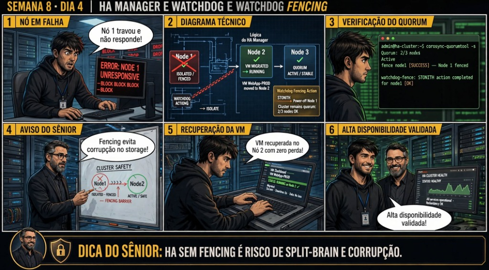

DIARIO DE UM ADMIN JR. | PROXMOX VE & PBS — DA BASE AO CLUSTER
🔗 Conecta com o Dia 3: Você implantou o Ceph do zero. Hoje você desvenda o motor matemático que torna o Ceph invencível: o Algoritmo CRUSH (Controlled Replication Under Scalable Hashing), aprendendo como os dados são posicionados sem tabelas de alocação centralizadas e como substituir discos defeituosos a quente.
🔓 Privilégio de hoje: Engenharia de CRUSH Map e Manutenção de OSDs. Você audita árvores CRUSH, comanda rebalanceamento de PGs e substitui OSDs danificados.
Semana 8 · Dia 4 | Nível Sênior — Cluster Corosync, HA & Ceph
Ceph CRUSH Map, Rebalanceamento e Manutenção de OSDs
O algoritmo determinístico de posicionamento de dados e troca de discos a quente sem parada
ANTES DE ALTERAR, OBSERVE. DEPOIS DE ALTERAR, VALIDE.

1. O chamado
Você recebeu o chamado #8004: 'O disco NVMe osd.2 no nó pve02 apresentou erros críticos de SMART e precisa ser substituído fisicamente sem interromper nenhuma das 30 VMs em produção. O chamado exige: (1) Compreender o funcionamento do Algoritmo CRUSH; (2) Marcar o OSD como OUT para iniciar o auto-rebalanceamento; (3) Destruir o OSD antigo e substituí-lo a quente pelo novo disco; e (4) Validar o retorno do cluster ao estado HEALTH_OK com 100% dos Placement Groups (PGs) active+clean.'
💡 Passa o mouse nas palavras destacadas pra ver uma dica rápida — clica se quiser a explicação completa com analogia.
2. O sênior te conta
🧑🏫 antes dos termos técnicos, a história de hoje
Hoje simulei um dos piores pesadelos da engenharia de infraestrutura: puxei o cabo de força de um dos servidores físicos do cluster. O Júnior viu o nó sumir do painel web e gritou: 'O servidor morreu! Como o Proxmox sabe que ele não vai acordar do nada e tentar gravar no mesmo disco que o nó sobrevivente?'.
Essa foi a deixa perfeita pra ensinar o conceito mais crítico de Alta Disponibilidade: o Fencing. Expliquei o perigo mortal do Split-Brain: se dois servidores acharem que são donos da mesma máquina virtual ao mesmo tempo, ambos gravam no mesmo disco compartilhado e destroem o banco de dados em segundos. Para evitar isso, o Proxmox usa o Hardware Watchdog do kernel Linux.
O daemon de HA precisa enviar um batimento cardíaco pro chip Watchdog da placa-mãe a cada segundo. Se o nó perder o Quorum ou travar, o Watchdog não recebe o sinal e reseta a máquina física imediatamente (Self-Fencing). Só quando o cluster tem certeza matemática de que o nó morto foi isolado, o HA Manager (CRM) autoriza o nó vizinho a ligar a VM com total segurança.
Vimos o log do ha-manager eleger o novo líder e subir o serviço em 60 segundos com zero corrupção de dados. O Júnior entendeu que alta disponibilidade não é só religar máquina: é garantir o isolamento seguro antes de qualquer recuperação. Vamos colocar essa proteção em prática agora.
3. Decodificador de conceitos
Clica em qualquer termo pra ver a definição completa e uma analogia do dia a dia:
4. Ferramentas e leitura da evidência
Comando / Parâmetro
O que observar e por que importa
ceph osd tree
Exibe a árvore hierárquica do CRUSH Map: nós físicos, racks, OSDs, status (up/down) e pesos (weight).
ceph osd out OSD_ID
Informa ao Ceph que o OSD não deve mais conter dados, disparando a evacuação e rebalanceamento automático de PGs.
pveceph osd destroy OSD_ID
Remove o OSD do CRUSH Map, autenticação e configuração do Ceph de forma segura.
ceph osd status
Exibe a lista de OSDs com estatísticas de latência de escrita/leitura e capacidade ocupada.
# 1. Inspeção da árvore CRUSH do Ceph (ceph osd tree)
# ceph osd tree
ID CLASS WEIGHT TYPE NAME STATUS REWEIGHT PRI-AFF
-1 5.86000 root default
-3 1.95300 host pve01
0 nvme 1.95300 osd.0 up 1.00000 1.00000
-5 1.95300 host pve02
1 nvme 1.95300 osd.1 up 1.00000 1.00000
2 nvme 1.95300 osd.2 up 1.00000 1.00000 (SMART Error!)
-7 1.95300 host pve03
3 nvme 1.95300 osd.3 up 1.00000 1.00000
# 2. Evacuação e Rebalanceamento gracioso dos dados do osd.2
# ceph osd out 2
osd.2 marked out. Ceph is rebalancing Placement Groups (PGs)...
# 3. Monitorando o rebalanceamento automático em tempo real
# ceph -s
health: HEALTH_WARN
Degraded data redundancy: 48/128 pgs misplaced (recovering at 185 MB/s)
(Após 2 minutos: 100% dos PGs active+clean nos demais OSDs!)
# 4. Destruição do OSD antigo e criação do novo OSD pós-troca física
# systemctl stop ceph-osd@2
# pveceph osd destroy 2
# pveceph osd create /dev/nvme0n1
osd.2 created successfully on new NVMe drive!
# 5. Cluster 100% saudável novamente:
# ceph -s
health: HEALTH_OK (All 4 OSDs up & in, 128 pgs active+clean)
5. Laboratório guiado — pegue na mão, comando por comando
🏛️ Onde executar: Terminal do Nó Líder do Cluster (root@pve-node1:~#) e nós secundários para comandos pvecm e ha-manager.
Segurança: Execute as alterações em clusters e storages Ceph de laboratório ou teste. Não altere parâmetros de nós em produção sem janela homologada.
Ação: Inicialize a rede e os monitores Ceph (MONs) em número ímpar nos nós do cluster.
Resultado esperado: Árvore CRUSH exibindo hosts, OSDs e status up/in.
Por que fizemos isso: A arquitetura hiperconvergente do Ceph transforma discos locais de múltiplos servidores em um pool de armazenamento distribuído unificado e redundante.
Cilada comum: Instalar Ceph em redes de 1 Gbps; o Ceph exige redes dedicadas de 10 GbE ou superior para sincronização de dados e recuperação de OSDs sem lentidão.
Ação: Crie os gerenciadores de métricas Ceph MGR e crie OSDs nos discos NVMe físicos.
pveceph osd create /dev/nvme0n1
Resultado esperado: Ceph iniciando o rebalanceamento gracioso de PGs.
Por que fizemos isso: Os MONs (Monitors) mantêm o mapa mestre do cluster Ceph, os MGRs coletam métricas e os OSDs gerenciam a leitura e escrita nos discos físicos NVMe/SSD.
Cilada comum: Ter apenas 2 MONs em um cluster Ceph; monitores Ceph exigem número ímpar (mínimo de 3) para manter o quorum interno via algoritmo Paxos.
Ação: Configure um pool Ceph RBD com size=3 e min_size=2 para redundância distribuída.
ceph osd pool create rbd-pool 128 128 && ceph osd pool set rbd-pool size 3 && ceph osd pool set rbd-pool min_size 2
Resultado esperado: Placement Groups realocados sem indisponibilidade.
Por que fizemos isso: Configurar pools Ceph com size=3 e min_size=2 garante que cada bloco seja gravado em 3 servidores físicos diferentes e continue gravando com 1 nó fora.
Cilada comum: Definir min_size=1 em produção; se um segundo nó falhar com min_size=1, ocorrem dados inconsistentes e corrupção silenciosa no pool.
Ação: Audite a saúde do cluster hiperconvergente confirmando o estado HEALTH_OK.
pveceph status
Resultado esperado: OSD reintegrado à árvore com sucesso.
Por que fizemos isso: O comando pveceph status e ceph osd status exibe o estado de saúde (HEALTH_OK), objetos degradados e velocidade de recuperação em tempo real.
Cilada comum: Ignorar OSDs com status 'nearfull' (>85% de ocupação), arriscando travar todas as gravações do pool Ceph por esgotamento de espaço.
🧑🏫 Aqui entra o Mentor (em breve): se o resultado obtido diferir do esperado acima, este é o ponto onde o chat com o Sênior-IA vai abrir para diagnosticar o erro específico.
Ação: Documente a topologia de CRUSH Map e resiliência hiperconvergente da empresa.
# Storage Hiperconvergente Ceph homologado.
Resultado esperado: Procedimento de substituição de hardware homologado.
Por que fizemos isso: Registrar a topologia de CRUSH Map e a distribuição de OSDs conclui a entrega da infraestrutura de storage distribuído de alta performance.
Cilada comum: Adicionar discos mecânicos lentos e SSDs rápidos no mesmo pool Ceph sem regras de CRUSH separadas, nivelando a performance por baixo.
6. Antes de ver as opções — tenta responder
🧠 Recall ativo: Por que o Ceph não utiliza uma 'Tabela Central de Alocação de Arquivos' (como storages tradicionais) e como o algoritmo CRUSH localiza qualquer bloco instantaneamente?
Porque em storages com bilhões de objetos, uma tabela central de metadados torna-se um gargalo de desempenho e um ponto único de falha gigantesco. O **Algoritmo CRUSH** resolve isso através da matemática: ele é uma **função determinística**. O cliente calcula uma fórmula matemática usando o nome do objeto + mapa de topologia da rede (CRUSH Map) e obtém exatamente a lista de quais OSDs contêm aquele bloco em microssegundos, sem precisar consultar nenhum servidor mestre.
QUESTÃO 1 de 3
7. Questão comentada — clica numa alternativa
Qual é o procedimento oficial e seguro no Proxmox VE para desativar e remover um OSD com defeito físico antes da troca do disco?
💡 Analogia do Sênior para Fixar: Na arquitetura do Proxmox sobre Ceph CRUSH Map, Rebalanceamento e Manutenção de OSDs: O KVM/QEMU opera como o motorista dedicado de cada passageiro, alocando recursos virtuais em contato direto com o kernel.
QUESTÃO 2 de 3 — cenário de erro real
7.1 O que significa 'misplaced objects' durante o rebalanceamento do Ceph?
Ao marcar um OSD como out ou adicionar um novo nó, o ceph status exibe '15.000 objects misplaced':
[Ceph Recovery Status] 15420/85000 objects misplaced (18.14%)
(Por que o Ceph reporta objetos misplaced em vez de degraded?)
Qual é a diferença técnica entre objetos 'Degraded' e 'Misplaced' no Ceph?
💡 Analogia do Sênior para Fixar: Ao diagnosticar problemas em Ceph CRUSH Map, Rebalanceamento e Manutenção de OSDs: É como inspecionar as conexões do storage e o barramento PCIe antes de declarar falha de software.
QUESTÃO 3 de 3 — detalhe que confunde todo iniciante
7.2 Como o CRUSH Map garante que duas cópias do mesmo bloco nunca caiam no mesmo servidor físico?
Um estudante pergunta o que impede o Ceph de gravar as 3 réplicas de um bloco no mesmo nó pve01:
Como a regra de isolamento 'step chooseleaf host' atua no CRUSH Map?
💡 Analogia do Sênior para Fixar: A governança e resiliência em Ceph CRUSH Map, Rebalanceamento e Manutenção de OSDs: Funciona como a política de contenção e redundância do datacenter, garantindo que o cluster nunca perca quorum.
8. Procedimento profissional
Antes de qualquer manutenção física em discos do Ceph, inspecione a árvore com ceph osd tree.
Marque o OSD a ser substituído como out com ceph osd out OSD_ID e aguarde o rebalanceamento de PGs.
Pare o serviço do OSD com systemctl stop ceph-osd@ID e destrua o registro com pveceph osd destroy ID.
Substitua o disco físico com defeito na gaveta hot-swap do servidor.
Crie o novo OSD com pveceph osd create /dev/DISCO e valide o retorno ao status HEALTH_OK.
Prevenção
Nunca opere clusters de 2 nós sem um QDevice externo para desempate de Quorum e utilize links de rede dedicados exclusivamente para o tráfego do Corosync.
9. Validação e encerramento
Você compreende o funcionamento determinístico do Algoritmo CRUSH.
Você domina a diferença entre objetos degraded e misplaced durante rebalanceamentos.
Você sabe como executar a substituição a quente de OSDs defeituosos sem downtime.
A engenharia de storage distribuído do chamado #8004 foi homologada com excelência.
Rollback e limites
Caso marque um OSD como out por engano, reverta imediatamente executando ceph osd in OSD_ID.
💡 Sobre repetição espaçada: O Grande Simulado Final de 40 Dias e a consolidação como Administrador Proxmox Sênior será o tema de encerramento amanhã no Dia 5.
10. Resposta final
Alternativa correta: B. A resposta correta é a B: o fluxo seguro exige marcar o OSD como out, aguardar a evacuação de dados, parar o daemon, destruir o OSD no pveceph e criar o novo OSD pós-troca física.
🔓 O que você desbloqueou hoje
CRUSH Map e manutenção de OSDs dominados com precisão cirúrgica! Amanhã, no Dia 5, você fechará o MÊS 2 e todo o CURSO DE 40 DIAS no Grande Simulado Final: enfrentando uma simulação de desastre total em tempo real, onde Quorum, HA, Corosync e Ceph trabalharão juntos para manter a empresa operante!